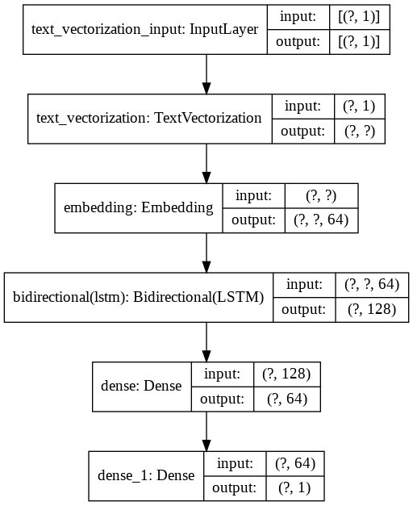

Classification of text
Contents
Classification of text¶
import tensorflow as tf
import tensorflow_datasets as tfds
Dataset information¶
builder = tfds.builder('imdb_reviews')
print(builder.info)
tfds.core.DatasetInfo(
name='imdb_reviews',
version=1.0.0,
description='Large Movie Review Dataset.
This is a dataset for binary sentiment classification containing substantially more data than previous benchmark datasets. We provide a set of 25,000 highly polar movie reviews for training, and 25,000 for testing. There is additional unlabeled data for use as well.',
homepage='http://ai.stanford.edu/~amaas/data/sentiment/',
features=FeaturesDict({
'label': ClassLabel(shape=(), dtype=tf.int64, num_classes=2),
'text': Text(shape=(), dtype=tf.string),
}),
total_num_examples=100000,
splits={
'test': 25000,
'train': 25000,
'unsupervised': 50000,
},
supervised_keys=('text', 'label'),
citation="""@InProceedings{maas-EtAl:2011:ACL-HLT2011,
author = {Maas, Andrew L. and Daly, Raymond E. and Pham, Peter T. and Huang, Dan and Ng, Andrew Y. and Potts, Christopher},
title = {Learning Word Vectors for Sentiment Analysis},
booktitle = {Proceedings of the 49th Annual Meeting of the Association for Computational Linguistics: Human Language Technologies},
month = {June},
year = {2011},
address = {Portland, Oregon, USA},
publisher = {Association for Computational Linguistics},
pages = {142--150},
url = {http://www.aclweb.org/anthology/P11-1015}
}""",
redistribution_info=,
)
Features¶
builder = tfds.builder('imdb_reviews')
#Features
print(f"Features: {{0}}".format(builder.info.features))
#shape
print(f"Features shape: {{0}}".format(builder.info.features.shape))
#type of label
print(f"Label type: {{0}}".format(builder.info.features["label"].dtype))
#number of classes
print(f"Number of classes: {{0}}".format(builder.info.features["label"].num_classes))
Features: FeaturesDict({
'label': ClassLabel(shape=(), dtype=tf.int64, num_classes=2),
'text': Text(shape=(), dtype=tf.string),
})
Features shape: {'text': (), 'label': ()}
Label type: <dtype: 'int64'>
Number of classes: 2
Downloading dataset¶
ds, info = tfds.load('imdb_reviews', split='train', with_info=True, try_gcs=True)
Displaying Text and Label¶
tfds.as_dataframe(ds.take(1), info)
| label | text | |
|---|---|---|
| 0 | 0 (neg) | This was an absolutely terrible movie. Don't be lured in by Christopher Walken or Michael Ironside. Both are great actors, but this must simply be their worst role in history. Even their great acting could not redeem this movie's ridiculous storyline. This movie is an early nineties US propaganda piece. The most pathetic scenes were those when the Columbian rebels were making their cases for revolutions. Maria Conchita Alonso appeared phony, and her pseudo-love affair with Walken was nothing but a pathetic emotional plug in a movie that was devoid of any real meaning. I am disappointed that there are movies like this, ruining actor's like Christopher Walken's good name. I could barely sit through it. |
(ds_train, ds_test), info = tfds.load('imdb_reviews', split=['train', 'test'], with_info=True, as_supervised=True)
print(ds_train.element_spec)
(TensorSpec(shape=(), dtype=tf.string, name=None), TensorSpec(shape=(), dtype=tf.int64, name=None))
Text Vectorization¶
vocabulary_size = 1000
encoder = tf.keras.layers.experimental.preprocessing.TextVectorization(
max_tokens=vocabulary_size)
encoder.adapt(ds_train.map(lambda text, label: text))
vocabulary = encoder.get_vocabulary()
print(vocabulary[:20])
['', '[UNK]', 'the', 'and', 'a', 'of', 'to', 'is', 'in', 'it', 'i', 'this', 'that', 'br', 'was', 'as', 'for', 'with', 'movie', 'but']
print(len(encoder.get_vocabulary()))
1000
print(encoder("incredibly"))
tf.Tensor([927], shape=(1,), dtype=int64)
Building Training Model¶
model = tf.keras.Sequential([
encoder,
tf.keras.layers.Embedding(
input_dim=len(encoder.get_vocabulary()),
output_dim=64,
mask_zero=True),
tf.keras.layers.Bidirectional(tf.keras.layers.LSTM(64)),
tf.keras.layers.Dense(64, activation='relu'),
tf.keras.layers.Dense(1)
])
model.compile(loss=tf.keras.losses.BinaryCrossentropy(from_logits=True),
optimizer=tf.keras.optimizers.Adam(1e-4),
metrics=['accuracy'])
Visualizing Model¶
Training¶
(ds_train, ds_test), info = tfds.load('imdb_reviews', split=['train', 'test'], with_info=True, as_supervised=True)
ds_train = ds_train.batch(128)
ds_test = ds_test.batch(128)
history = model.fit(ds_train, epochs=10,
validation_data=ds_test, validation_steps=30)
Epoch 1/10
196/196 [==============================] - 63s 322ms/step - loss: 0.6842 - accuracy: 0.5019 - val_loss: 0.5997 - val_accuracy: 0.6341
Epoch 2/10
196/196 [==============================] - 60s 308ms/step - loss: 0.4856 - accuracy: 0.7404 - val_loss: 0.4229 - val_accuracy: 0.7914
Epoch 3/10
196/196 [==============================] - 60s 307ms/step - loss: 0.4005 - accuracy: 0.8178 - val_loss: 0.3746 - val_accuracy: 0.8302
Epoch 4/10
196/196 [==============================] - 60s 307ms/step - loss: 0.3622 - accuracy: 0.8428 - val_loss: 0.3532 - val_accuracy: 0.8451
Epoch 5/10
196/196 [==============================] - 60s 308ms/step - loss: 0.3374 - accuracy: 0.8551 - val_loss: 0.3360 - val_accuracy: 0.8492
Epoch 6/10
196/196 [==============================] - 60s 307ms/step - loss: 0.3219 - accuracy: 0.8624 - val_loss: 0.3273 - val_accuracy: 0.8510
Epoch 7/10
196/196 [==============================] - 60s 307ms/step - loss: 0.3130 - accuracy: 0.8668 - val_loss: 0.3231 - val_accuracy: 0.8544
Epoch 8/10
196/196 [==============================] - 60s 308ms/step - loss: 0.3071 - accuracy: 0.8698 - val_loss: 0.3197 - val_accuracy: 0.8508
Epoch 9/10
196/196 [==============================] - 60s 307ms/step - loss: 0.3028 - accuracy: 0.8714 - val_loss: 0.3187 - val_accuracy: 0.8529
Epoch 10/10
196/196 [==============================] - 60s 307ms/step - loss: 0.3000 - accuracy: 0.8736 - val_loss: 0.3186 - val_accuracy: 0.8557
print(model.summary())
Model: "sequential"
_________________________________________________________________
Layer (type) Output Shape Param #
=================================================================
text_vectorization (TextVect (None, None) 0
_________________________________________________________________
embedding (Embedding) (None, None, 64) 64000
_________________________________________________________________
bidirectional (Bidirectional (None, 128) 66048
_________________________________________________________________
dense (Dense) (None, 64) 8256
_________________________________________________________________
dense_1 (Dense) (None, 1) 65
=================================================================
Total params: 138,369
Trainable params: 138,369
Non-trainable params: 0
_________________________________________________________________
None
from tensorflow.keras.utils import plot_model
plot_model(model, show_shapes=True)

Visualizing the Training History¶
import matplotlib.pyplot as plot
plot.plot(history.history["accuracy"], label="Training")
plot.plot(history.history["val_accuracy"], label="Validation")
plot.legend(loc="upper left")
plot.ylabel("Accuracy")
plot.xlabel("Number of Epochs")
plot.title("History of Training and Validation Accuracy across epochs")
Text(0.5, 1.0, 'History of Training and Validation Accuracy across epochs')
plot.plot(history.history["loss"], label="Training")
plot.plot(history.history["val_loss"], label="Validation")
plot.legend(loc="upper left")
plot.ylabel("Loss")
plot.xlabel("Number of Epochs")
plot.title("History of Training and Validation Loss across epochs")
Text(0.5, 1.0, 'History of Training and Validation Loss across epochs')
Evaluating the Model¶
loss, accuracy = model.evaluate(ds_test, verbose=0)
print(f"accuracy: {accuracy} and loss:{loss}")
accuracy: 0.8560400009155273 and loss:0.31955674290657043
Prediction¶
import numpy as np
sample_text = ('The movie was good. The animation and the graphics '
'were out of this world. I would recommend this movie.')
predictions = model.predict(np.array([sample_text]))
print(predictions[0])
[0.5619277]
padding = "the " * 2000
predictions = model.predict(np.array([sample_text, padding]))
print(predictions[0])
[0.5619277]